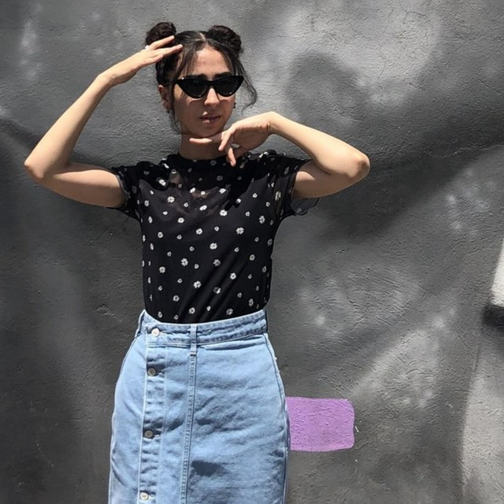
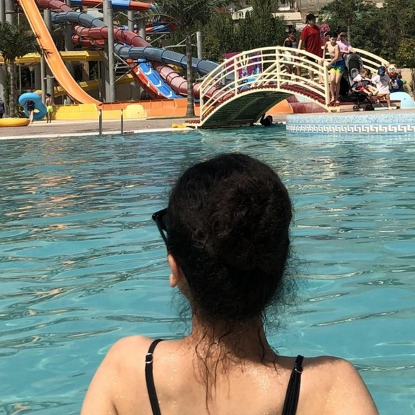
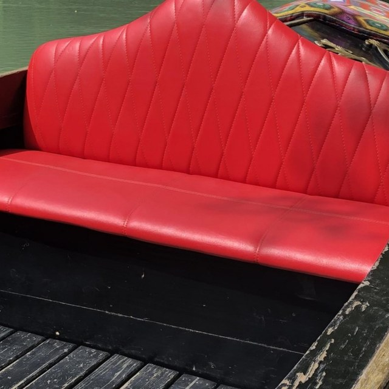
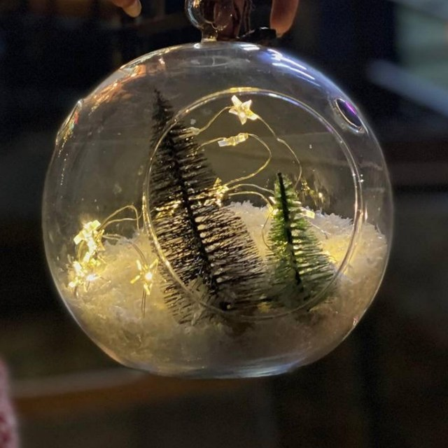
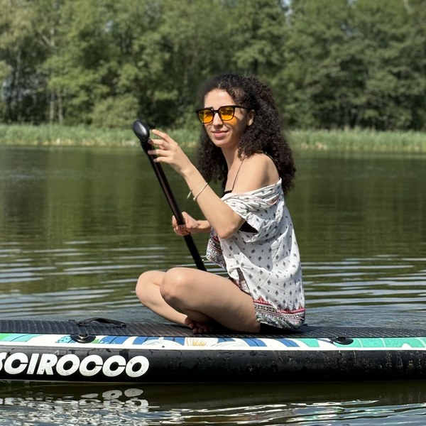
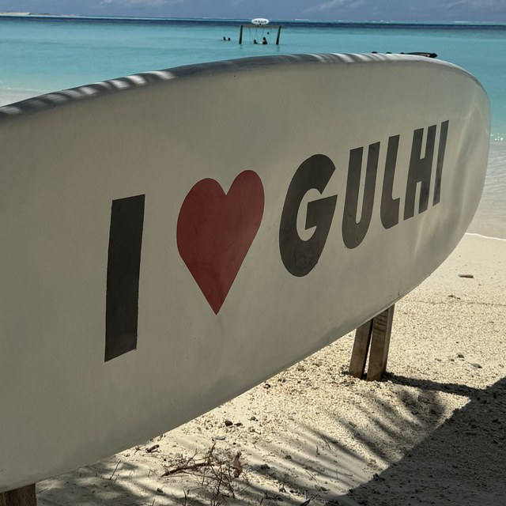
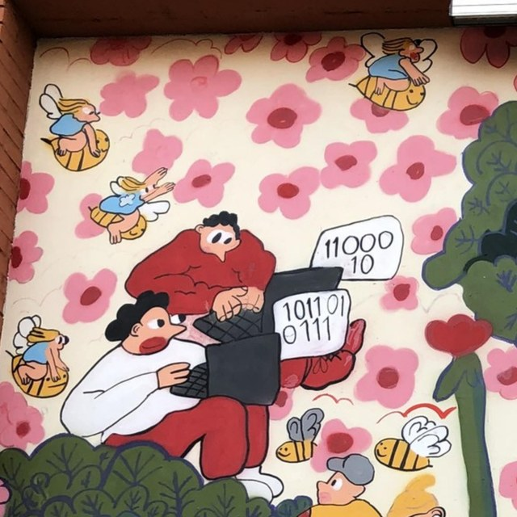
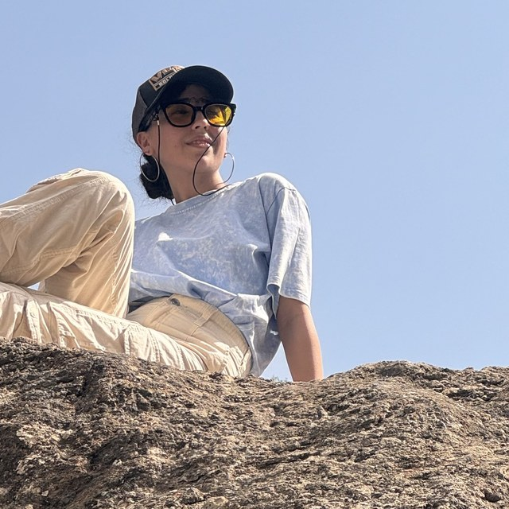
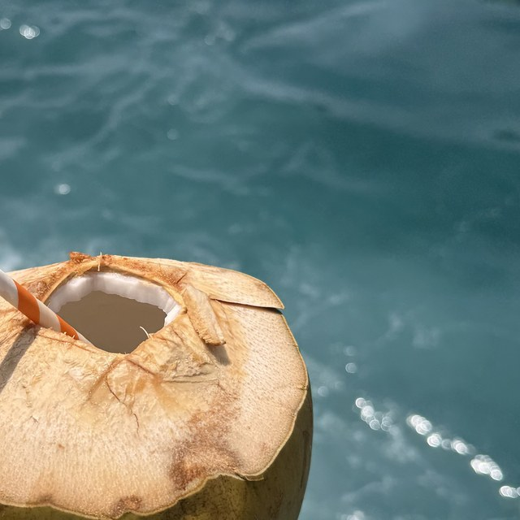

Мне 26, и последние 4 года я работаю продуктовым дизайнером — проектирую B2C, B2B и внутренние цифровые продукты в финтехе, банкинге и трейдинге. В работе участвую во всех этапах: от дискавери до запуска решений.I'm 26, and for the past 4 years I've been working as a product designer — designing B2C, B2B, and internal digital products in fintech, banking, and trading. I'm involved at every stage of the work, from discovery to launch.
Сейчас ищу сильную продуктовую команду, где смогу влиять на развитие продукта и продолжать профессионально расти как дизайнер.Right now I'm looking for a strong product team where I can influence the product's direction and keep growing as a designer.
У каждой команды свой процесс, но я стараюсь проходить примерно один и тот же путь — от понимания проблемы до проверки результата после запуска.Every team has its own process, but I try to follow roughly the same path — from understanding the problem to checking the result after launch.
Любая задача появляется не просто так — за ней всегда стоит проблема пользователя или бизнеса. Фиксирую: в чём проблема, какую боль решаем, какой JTBD стоит за сценарием, что хотим изменить в продукте и на какую метрику это должно повлиять.Every task exists for a reason — there's always a user or business problem behind it. I write down what the problem is, what pain we're solving, the JTBD behind the scenario, what we want to change in the product, and what metric it should move.
Смотрю прямых и косвенных конкурентов, обязательно изучаю международный рынок. Разбираюсь с аудиторией: кто пользователь, какие у него сценарии и сегменты, что происходит в продукте сейчас. Изучаю метрики, отзывы, обращения в поддержку. Если есть сомнение, что проблема действительно существует — провожу интервью или быстрые опросы. И сразу проверяю ограничения: технические, юридические и бизнесовые.I look at direct and indirect competitors, always including the international market. I dig into the audience: who the user is, what scenarios and segments exist, what's happening in the product right now. I study metrics, reviews, and support tickets. If I doubt the problem really exists, I run interviews or quick surveys. And I check constraints early — technical, legal, business.
Во время исследования обычно появляется много идей. Стараюсь не хвататься за первую, а фиксировать всё и приоритизировать. Для каждой гипотезы важно понимать: какую проблему она решает → почему должна сработать → какую метрику должна изменить.Research usually surfaces a lot of ideas. I try not to grab the first one, but log everything and prioritize. For each hypothesis I need to know: what problem it solves → why it should work → what metric it should change.
«Если добавить уведомление о низком остатке, партнёры будут раньше обновлять количество товаров» — сначала проверяю гипотезу качественно (интервью: партнёры действительно замечают остаток слишком поздно?), затем количественно (опрос: если 70% партнёров сталкиваются с этим — гипотеза значима), и только потом она попадает в разработку."If we add a low-stock notification, partners will update quantities earlier" — I first check the hypothesis qualitatively (interviews: do partners really notice low stock too late?), then quantitatively (a survey: if 70% of partners hit this problem, the hypothesis is significant), and only then does it move into development.
Дальше — подробные сценарии, прототипы и ключевые флоу. Но до финализации стараюсь проверить концепцию: usability-тестами, интервью с прототипом, опросами, хотя бы быстрыми коридорными тестами. После тестирования корректирую решение и только потом собираю все состояния: ошибки, статусы, адаптивы, тёмную и светлую темы, уведомления и остальные сценарии.Next come detailed scenarios, prototypes, and key flows. But before finalizing, I try to validate the concept: usability tests, prototype interviews, surveys, or at least quick hallway tests. After testing I adjust the solution, and only then assemble every state: errors, statuses, responsive layouts, dark and light themes, notifications, and the rest of the scenarios.
Работа дизайнера для меня не заканчивается на передаче макетов. Провожу дизайн-ревью, проверяю реализацию и заранее договариваюсь, какие события и метрики нужно собирать после запуска — без аналитики потом сложно ответить на главный вопрос: решение вообще сработало или просто было запущено.For me, a designer's job doesn't end at handoff. I run design reviews, check the implementation, and agree in advance on which events and metrics to track after launch — without analytics it's hard to later answer the main question: did the solution actually work, or did it just ship.
После запуска сравниваю: что ожидали → что получили. Смотрю метрики, собираю обратную связь, анализирую проблемные места и формирую следующие итерации.After launch I compare what we expected to what we got. I look at metrics, gather feedback, analyze pain points, and shape the next iterations.
В 2022 году я работала в отделе партнёров банка — на бизнесовой стороне продукта. Именно там я увидела, как UX-логика способна упростить жизнь: и пользователям, и самому бизнесу. Сначала дизайн был просто хобби для души.In 2022 I worked in a bank's partner department — on the business side of the product. That's where I first saw how UX logic can simplify life, both for users and for the business itself. At first, design was just a hobby for the soul.
После обучений и стажировок оно стало частью моей жизни. Я год боролась за свою мечту и сделала всё, чтобы стать продуктовым дизайнером.After courses and internships, it became part of my life. I spent a year fighting for that dream, and did everything I could to become a product designer.








